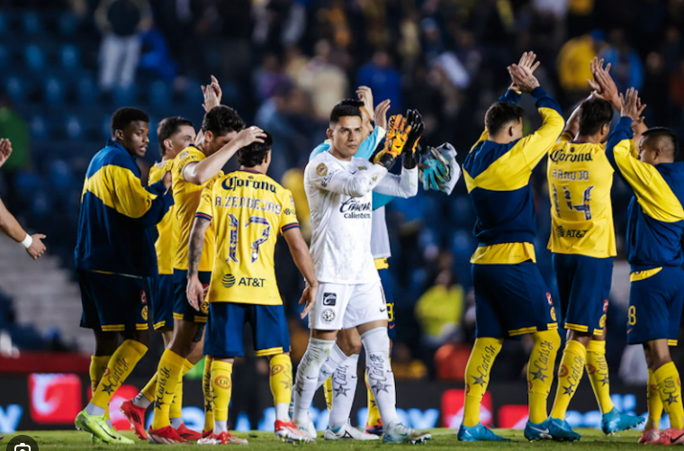
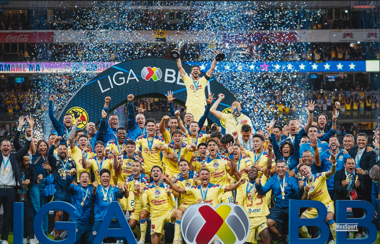

The thing I love the most is the soccer team Club america, I love it a little bit more than I love my boyfriend.
Club America is a great soccer team they are the best team in Liga Mx they cook up everyone but these past few months we've been losing our best players and we've been doing bad. Before we lost those plaers we were in our prime we won 3 times in a row making us tricampeones it couldve been four but toluca didn't play fair and the refs didn't do anything about it which made us lose our streak but its okay we have more thropies than them! Club america in my opinion is the best team and 2 days ago we won 2-4 we are back in our prime, we still miss everyone we lost without them we would've never made it this far.To me Club America is ore than just a soccer team, it is a passion and a source of pride for millions of fans. Supporting america means carryin the weight of its history, from legendary players to unforgettable championships, and feeling the exciment every time the team steps onto the field in the iconic yellow jersey. The love for Club america goes beyond wins and losses;it represents loyalty,unity, and belief tha no matter the challlenge, the team will fight until the last minute. Being an America fan is about celebrating victories together, and standing through defeats, and keeping the spirit of the Aguilas alive generation after generation.

Club america's achievements of winning the tricampeonato is a historic moment in Mexican soccer that reflects the greetness of the team. Winning three championships in a row is not an easy task, and it demonstrates the discipline, talent, and determination that define the club. Each player worked with dedication,and together they created a strong bond that led them to succes. At the same time, the passion of the fans gave the same movtivation to fight till the end.This victory is not just about the trophies, but about pride, tradition, and the powerful legacy of Club America that will continue to inspire future generations.
